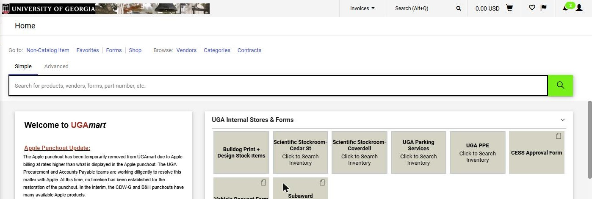
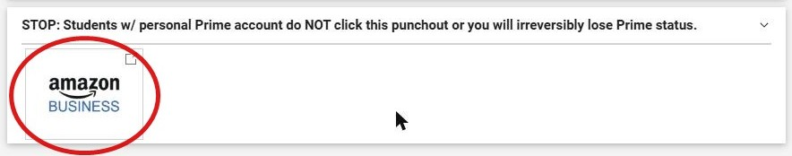
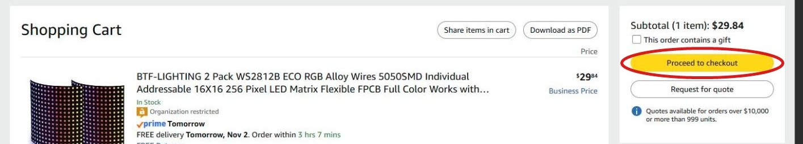
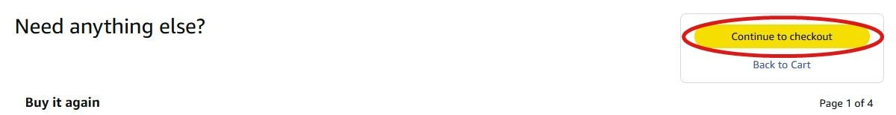
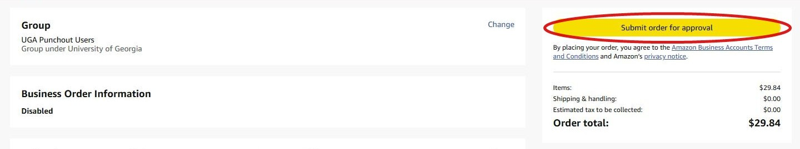
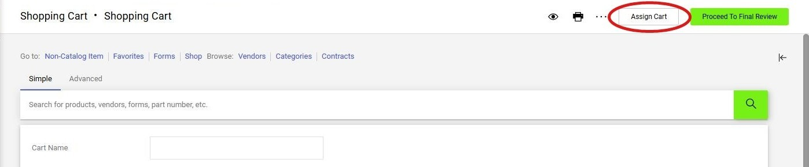

Practical answers for new and current MSC Lab members. If something here is wrong or missing, tell Dr. Shao.
The lab's Windows computers are managed by College of Engineering IT, not by the lab. If you see "Logon failure: user does not have access", your MyID hasn't been added to that machine yet. Dr. Shao can't add you; Engineering IT has to.
Email support@engr.uga.edu from your UGA email and copy Dr. Shao (yunli.shao@uga.edu). Include:
You can also use IT's User Computer Access Request Form instead of email.
Book time before using a shared computer. In the lab's Teams chat, LabComputerShare, each computer has its own calendar tab named by its tag (e.g. 749166_Ubuntu, 301192_WinUbuntu). Open the tab for your computer and click + New.
If the link says you don't have access, ask Dr. Shao to add you to the chat.
Boyd is locked outside business hours. Card access is handled by College of Engineering IT. Fill out their Boyd Access Request Form. You can also find it on the Engineering IT wiki under Forms → Building/Room Card Access Request Form. Ask in your first week, since it can take a few days to start working.
For large GPU jobs the lab uses UGA's GACRC Sapelo2 cluster. Accounts are requested by the PI, so ask Dr. Shao to request one for you, then see the GACRC wiki for how to log in and submit jobs. Ask before putting large datasets in the lab's shared storage.
When you need to buy something for the lab, you don't pay for it yourself. You put the items in a UGAmart cart, get Dr. Shao's approval, and then assign the cart to Reena Pidaparti. Reena checks it and places the order.
Other stores in UGAmart (Dell, CDW-G, B&H and so on) work the same way. The red circle in each picture shows where to click.
Go to ugamart.uga.edu and click Login to UGAmart. Sign in with your MyID. You'll see the UGAmart home page.

Scroll to the bottom of the home page and click the Amazon Business tile. Amazon opens in a new window. If nothing opens, your browser blocked the pop-up. Allow pop-ups for this site and click the tile again.

Shop on Amazon the way you normally would. When your cart is ready, click Proceed to checkout.

On the "Need anything else?" page, click Continue to checkout.

Click Submit order for approval. This does not buy anything. It just sends your cart back to UGAmart. If Amazon asks you to tick "I am human", tick the box and click Submit again.

You're back in UGAmart and your items are in the cart. Save the cart as a PDF and email it to Dr. Shao with a line on what it's for:
The PDF lists every item, the quantities and the total in one file, however long the cart is. Please send that instead of screenshots.
Wait for Dr. Shao's reply approving the order and confirming the SpeedType before you go on.
Once approved, click Assign Cart at the top right. Do not click Proceed To Final Review.

In the Assign Cart window:
Reena gets your cart, checks it, and places the order. If you have questions about your order, email Reena at Reena.Pidaparti@uga.edu.
Most lab simulation work runs through FIXS. Its documentation covers setting up CARLA:
.zip for Windows or the .tar.gz for Linux. That's enough to run simulations on the maps that ship with CARLA and on map packages the lab has already made.RoadRunner access comes from College of Engineering IT. Email support@engr.uga.edu with the subject "Need for RoadRunner License" and copy Dr. Shao (yunli.shao@uga.edu). You'll get an automatic reply with a ticket number; put that number in the subject of any follow-up emails.
IT will set up your access and email you instructions.
Install RoadRunner R2024b. The lab's shared maps are built in R2024b, and a scene saved in a newer release can't be opened by people still on R2024b.
The license has to be renewed every year. If RoadRunner says your license has expired, email IT again to renew it. If you have questions after the ticket is closed, reply to IT's email and it will reopen the request.